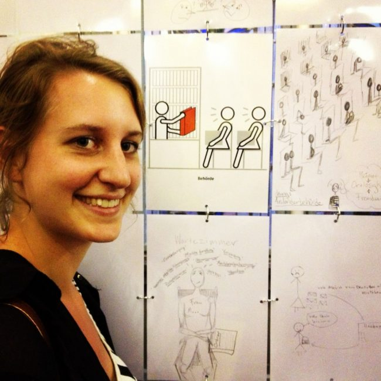
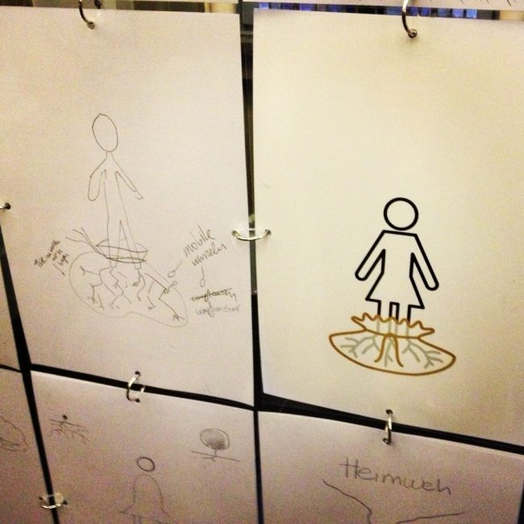

Reviewing the Rave: “We are the We”

We’re so used to talking all the time that words tend to lose their effect. Especially when the talking is predominantly happening in one direction, as it so often does in immigration discourse. The Migrantas organization is unleashing an alternate voice within immigrant women in Germany that is arguably just as powerful: their artistic creativity. Simple pencil and paper sketches are transformed into pictograms by the Migrantas artists, then shared with the city on billboards, postcards, and public transit. The finished products don’t utter a sound but are easily worth more than a thousand words.
This past April, Kelly and I participated in one of a series of Migrantas workshops in Berlin. Though the two of us pretty much live and breathe immigration, we were surprised how much there was left to reflect upon, namely our own migration experiences. For over two hours, we scribbled alongside five other participants in the very fitting Haus der Kulturen der Welt (House of World Cultures), producing a total of 28 sketches for the artists to work with. Our workshop group was younger than average and also more mobile and privileged: we were all well-educated and, except for Kelly, in possession of the highly-coveted EU passport. But the dynamics of integration go far beyond the legal and political. Economically, linguistically, professionally, socially, personally, even romantically… in one way or another we were all struggling to feel like insiders. At the same time, we recognized and celebrated the excitement, enrichment, and fulfillment that accompanies the process.
 “Migration = Enrichment”/”‘Migrants’ anyway” (despite having a German passport)
“Migration = Enrichment”/”‘Migrants’ anyway” (despite having a German passport)
This past Friday came the big reveal: we gathered with members of other workshops and the interested public at Berlin’s Rotes Rathaus for the opening of the exhibit showcasing our work. The exhibit was simple and straightforward, just like the Migrantas concept. A singular stretch of sketches grouped into common themes around accompanying pictograms. No curators, no conjectures, no conclusions. Only an opportunity to see the world through someone else’s lens and pencil strokes.
{kind=link}
The biggest take-away for Kelly and me came in how much in common we seemed to have with children of Turkish guest workers, students from Brazil, and grandmothers from Kurdistan. While our migration contexts, freedom of mobility, and future plans certainly vary drastically, our feelings about the integration process were at times strikingly similar. One group of images showed X’s over a mouth, a knot in a tongue, a speech bubble filled with jibber-jabber, and the phrase “I’m not stupid, I’m just starting to learn German!”. Where words may have only shown difference, our sketches revealed connection and commonality, finding themselves side-by-side on the board.
“Authorities”. Sketches underneath and to the right of the main pictogram by Kelly.
{kind=link}
 “Job, Effort, Luck, Rejection, Trainee, Intern, Degree, Training”. Sketch on upper right by Sophia.
“Job, Effort, Luck, Rejection, Trainee, Intern, Degree, Training”. Sketch on upper right by Sophia.
 “Language, Communication, Friendship, Feelings, Smile”
“Language, Communication, Friendship, Feelings, Smile”
“Heimweh”/”Homesickness”
{kind=link}
The points of commonality extended beyond those with migration backgrounds, perhaps one of the most valuable but under-appreciated aspects of the work Migrantas does. As one German presenter shared during her welcome speech, images of twisted tongues and closed mouths transported her back to her first experience abroad in Spain with her family and the frustration and fear she felt about not being able to communicate. “My mother taught me the term no hablo español, and I noticed that the pronoun was missing. I thought she did it on purpose so that it’d be really clear I couldn’t speak the language.” Immigrants or not, these images deliver the compelling message that we are all individuals, we all have multi-faceted identities, and we have all at some point or another felt different. Wir sind das Wir. We are the we.
{kind=link}

– By Sophia Burton
Don’t forget to check out the Migrantas exhibit for yourself at Berlin’s Rotes Rathaus at Alexanderplatz. Free to the public and open until August 27th. Keep an eye out for upcoming Migrantas workshops and exhibitions around Germany by liking them on Facebook. Registration is free and open to all with a migration story to the city where they now reside.
First and last photos by Ruben Gonzalez Escudero/Migrantas; all other photos by Sophia Burton